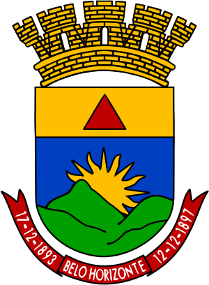

belo horizonte é um município brasileiro e a capital do estado de Minas Gerais. Sua população é de 2 315 560 habitantes,[4] segundo o censo de 2022, sendo o sexto município mais populoso do país, o terceiro da Região Sudeste e o primeiro de seu estado.[8] Com uma área de aproximadamente 331 km², possui uma geografia diversificada, com morros e baixadas. Com uma distância de 716 quilômetros de Brasília, é a segunda capital de estado mais próxima da capital federal, depois de Goiânia.
Cercada pela Serra do Curral, que lhe serve de moldura natural e referência histórica, foi planejada e construída para ser a capital política e administrativa do estado mineiro sob influência das ideias do positivismo, num momento de forte apelo da ideologia republicana no país.[9] Sofreu um inesperado crescimento populacional acelerado, chegando a mais de um milhão de habitantes com quase setenta anos de fundação. Entre as décadas de 1930 e 1940, ocorreu também o avanço da industrialização, além de muitas construções de inspiração modernista, notadamente as casas do bairro Cidade Jardim, que ajudaram a definir a fisionomia da cidade.
A capital mineira é sede da terceira concentração urbana mais populosa do país.[10][11] Belo Horizonte já foi indicada pelo Population Crisis Commitee, da ONU, como a metrópole com melhor qualidade de vida na América Latina e a 45.ª entre as 100 melhores cidades do mundo (dados de 2008).[12] Em 2010, a cidade gerou 1,4% do PIB do país,[13] e, em 2013, era o quarto maior PIB entre os municípios brasileiros, responsável por 1,53% do total das riquezas produzidas no país. Uma evidência do desenvolvimento da cidade nos últimos tempos é a classificação da revista América Economía, na qual, já em 2009, Belo Horizonte aparecia como uma das dez melhores cidades latino-americanas para fazer negócios, segunda do Brasil (atrás de São Paulo) e à frente de cidades como Rio de Janeiro, Brasília e Curitiba.[14]
Belo Horizonte é classificada como uma metrópole e exerce significativa influência nacional, seja do ponto de vista cultural, econômico ou político.[15] Conta com importantes monumentos, parques e museus, como o Museu de Arte da Pampulha, o Museu de Artes e Ofícios, o Museu de Ciências Naturais da PUC Minas, o Circuito Cultural Praça da Liberdade, o Conjunto Arquitetônico da Pampulha, o Mercado Central e a Savassi, e eventos de grande repercussão, como o Festival Internacional de Teatro, Palco e Rua (FIT-BH), o Verão Arte Contemporânea (VAC), o Festival Internacional de Curtas e o Encontro Internacional de Literaturas em Língua Portuguesa. É também nacionalmente conhecida como a "capital nacional dos botecos", por existirem mais bares per capita do que em qualquer outra grande cidade do Brasil.
para acessa sobre os melhores bares de bh acesse o link melhores bares de bh